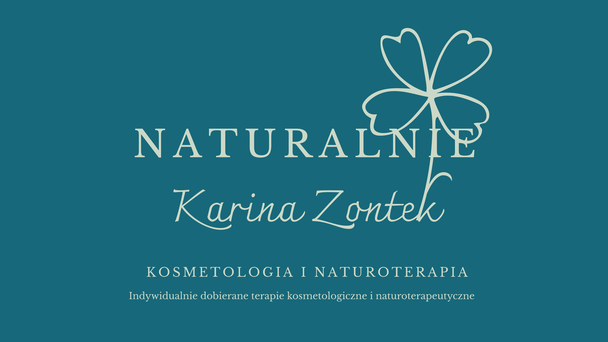

Holistyczne podejście do Twojego piękna i zdrowia
Odkryj harmonię dzięki połączeniu nowoczesnej kosmetologii i sprawdzonej naturoterapii.

Witaj w moim gabinecie
Nazywam się Karina Zontek – jestem kosmetologiem z wieloletnim doświadczeniem oraz naturoterapeutą. Pomagam zarówno Twojej skórze, jak i całemu organizmowi wrócić do naturalnej równowagi. W swojej pracy kieruję się w pełni holistycznym i indywidualnym podejściem, dlatego każdą terapię rozpoczynam od szczegółowej konsultacji. Zapraszam Cię do mojego świata, jeśli zależy Ci na zdrowym, naturalnym wyglądzie i jesteś gotowa/gotowy na świadome, stopniowe zmiany w swoim stylu życia.
Dowiedz się więcej o moim doświadczeniu →
W czym mogę Ci pomóc?
- Kosmetologia Estetyczna: Nowoczesne zabiegi odmładzające i pielęgnacyjne, dobrane do potrzeb Twojej skóry.
- Naturoterapia: Holistyczne metody przywracania równowagi organizmu, relaksacja i naturalne wspomaganie zdrowia.
- Konsultacje Indywidualne: Dobór optymalnej pielęgnacji domowej oraz ułożenie spersonalizowanego planu zabiegowego.
Zobacz pełną ofertę zabiegów →
Umów się